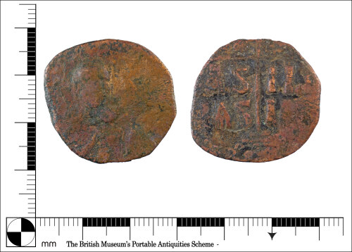

Ukázková galerie
Tato stránka obsahuje vybrané obrázky byzantských mincí použité pro dokumentaci projektu Archaeo-LLM.

Galerie byzantských mincí a archeologických nálezů
Tato stránka obsahuje vybrané obrázky byzantských mincí použité pro dokumentaci projektu Archaeo-LLM.
